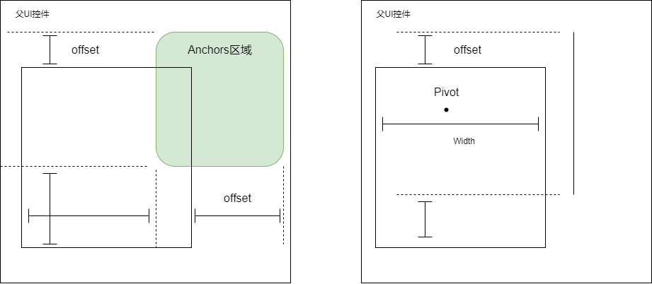

01UI布局锚点结构
UI布局锚点结构
游戏中UI父子通常通过锚点布局来实现画布大小，位置的关联。而锚点计算过程基本都是走同一套坐标点计算逻辑。将其从数学上抽象出来可以得到如下的计算流程。
数学公式计算
其实统一来讲，子面板大小相对父级别面板就是两个变换过程。
- 从父控件通过Anchor值计算出Anchor区域
- 从Anchor区域通过偏移值计算出子空间区域 对应情况可以用下面两张图来描述：

由这两个图，先可以用简单两句话来描述：
- 如果Anchor有长度，则通过线段两个端点的Offset距离来确定子控件该方向上长度，无视Pivot概念。
- 如果Anchor没有长度，则通过位移来确定Pivot点，然后通过Pivot比例和长度width，height等来确定子控件该方向上长度。
到Anchors变变换
对于Anchors可以简单的用线性变换来描述：
因为UI面板通常为二维布局，所以可以用两个点来表示控件所在的范围，即左上角和右下角。如果使用列向量来表示点，则可以表示为二维向量。但是由于UI控件存在点平移的感念，并不属于一个线性控件，应表示为仿射空间中的点，则可将UI范围如下表示：
$$ P=\begin{bmatrix} x\\ y\\ 1 \end{bmatrix} , Rect=\begin{bmatrix} P_1 \\ P_2 \end{bmatrix} $$$P_1,P_2$就是控件布局的左上角点和右下角点，于是Rect就刻画了父UI控件所在的区域。
然后则通过锚点比例结构变化到Anchors区域上面，锚点比例由Anchors中的Minimum和Maximum数值决定。Minimum决定了Anchors的左上角点$A1$的位置，Maximum决定了Anchor是右下角点$A2$的位置。
Minimum和Maximum两者都是一个二维向量（或者说是两个比例值），可表示为$[Min.x,Min.y]，Min.x,Min.y\in[0,1]$。其值说明的是这个点在父UI空间中的比例位置。即把父UI空间左上角点标记为$[0,0]$，右下角标记为$[1,1]$通过比例换算得出对应Anchors的店。
所以Anchors的表示左上角点$A1$和右下角点$A2$可通过如下计算
$$ \begin{bmatrix} A_1\\ A_2 \end{bmatrix} =\begin{bmatrix} P_1+(P_2-P_1)R_{min}\\ P_1+(P_2-P_1)R_{max}\\ \end{bmatrix} =\begin{bmatrix} I-R_{min} & R_{min}\\ I-R_{max} & R_{max}\\ \end{bmatrix} \begin{bmatrix} P_1\\ P_2 \end{bmatrix} $$这里因为$P_1,P_2$这里都是点，取值像素点值。
其中$R_{min},R_{max}$是跟都是缩放变化，其与Anchors中Minimum，Maximum关联如下：
$$ R_{min}=\begin{bmatrix} Minimum.x & & \\ & Minimum.y & \\ & & 0 \\ \end{bmatrix} , R_{max}=\begin{bmatrix} Maximum.x & & \\ & Maximum.y & \\ & & 0 \\ \end{bmatrix} $$从Anchors到子面板
然后对于Anchors再变化到子面板上面。我们先考虑Anchors为正方形的情况，如果Anchors为正方形，对应上下左右四边使用距离边的Offset值来计算。对于左边和上边实际相当于对左上角点进行平移操作，可通过平移变换实现。计算方式如下公式：
$$ T=\begin{bmatrix} 1 & 0 & x\\ 0 & 1 & y\\ 0 & 0 & 1 \end{bmatrix} , \begin{bmatrix} C_1\\ C_2 \end{bmatrix}= \begin{bmatrix} T_1 & 0 \\ 0 & T_2 \end{bmatrix} \begin{bmatrix} A_1\\ A_2 \end{bmatrix} $$$T_1$相当于对$A_1$点移动OffsetTop,OffsetLeft距离，$T_2$相当于对$A_2$点移动OffsetBottom,OffsetRight距离。 然后对于点的情况，此时启用的是一个Positon值,Size值以及Alignment值。会先通过Poisition算出Alignment的点,然后按照图片从左上到右下0到1的比例来计算出自控件的宽度。我们任然以计算后的矩阵左上右下点来表示子控件区域,计算公式如下：
$$ T_P=\begin{bmatrix} 1 & 0 & P_x\\ 0 & 1 & P_y\\ 0 & 0 & 1 \end{bmatrix} , T_{S1} = \begin{bmatrix} 1 & 0 & S_x*A_x\\ 0 & 1 & S_y*A_y\\ 0 & 0 & 1 \end{bmatrix} , T_{S2} = \begin{bmatrix} 1 & 0 & S_x*(1-A_x)\\ 0 & 1 & S_y*(1-A_y)\\ 0 & 0 & 1 \end{bmatrix} $$$$ \begin{bmatrix} C_1\\ C_2 \end{bmatrix}= \begin{bmatrix} T_{S1} & 0 \\ 0 & T_{S2} \end{bmatrix} \begin{bmatrix} T_P & 0 \\ 0 & T_P \end{bmatrix} \begin{bmatrix} A_1\\ A_2 \end{bmatrix}= \begin{bmatrix} T_{S1}T_P & 0 \\ 0 & T_{S2}T_P \end{bmatrix} \begin{bmatrix} A_1\\ A_2 \end{bmatrix} $$
可以看到对于从Anchor转换到子空间UI布局最后都是一个对角矩阵变换。可以表示为
$$ \begin{bmatrix} C_1\\ C_2 \end{bmatrix}= \begin{bmatrix} T_1 & 0 \\ 0 & T_2 \end{bmatrix} \begin{bmatrix} A_1\\ A_2 \end{bmatrix} $$所以最终父子空间之间的坐标点关联可以表示为两个独立的坐标变化，公式如下：
$$ \begin{bmatrix} C_1\\ C_2 \end{bmatrix}= \begin{bmatrix} T_1 & 0 \\ 0 & T_2 \end{bmatrix} \begin{bmatrix} I-R_{min} & R_{min}\\ I-R_{max} & R_{max}\\ \end{bmatrix} \begin{bmatrix} P_1\\ P_2 \end{bmatrix} $$